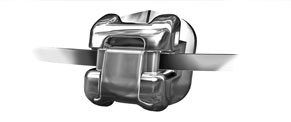

Orthodontics is a science that not only deals with treatment of irregularities in teeth and jaw, but also gives a new lease of life to one’s smile, bringing confidence. With technology surpassing all boundaries of innovation and discovery, an innovative technology – self-ligating braces - makes orthodontic treatment less time consuming and more comfortable than ever.
The Damon System is one such contraption that treats the abnormalities in teeth and jaws, bringing vibrant change in one’s facial appearance. The technology is now available with orthodontists all over the world, and also easily available in hospitals in India. A great Damon smile enhances self-esteem and confidence regardless of age, plus improved overall oral health. Many Damon patients see a noticeable change not only in their teeth, but in entire face. That is because Damon System treatment creates a beautiful, broad, natural smile, which provides stunning facial balance, and creates a dynamic look.
The combination of Damon™ Passive Self-Ligating Brackets and low-friction, low-force mechanics provide remarkable advantages over traditional orthodontic approaches.
Thousands of orthodontists across the world are now achieving results beyond previously conceived expectations - in less time, with very few auxiliary appliances and with far greater patient comfort.
The Damon System can help deliver what patients want - beautiful smiles in less time with less discomfort. This system recognizes the unique characteristics of each individual, yet provides a system that yields superior results with far greater efficiencies than conventional appliances.
Research indicates that optimum orthodontic forces should be just high enough to stimulate tooth movement without cutting off the vascular supply to the periodontal ligament. The Damon System appliance is designed to allow the clinician to use these optimum low forces throughout all phases of treatment. This is only possible with a completely passive appliance system. The Damon System facilitates healthy tooth movement with complete control.
Damon System:
- Offers newly designed hooks for easy elastic ligation and superior patient comfort.
- Slide opens away from the clinician, allowing clear visibility into the slot during placement and when engaging the archwire prior to closing the slide.
- New precision MIM slide with enhanced leading edge makes opening and closing easier with more-consistent opening and closing forces.
- New rounded contours are equal to conventional bracket radii, ensuring greater patient comfort.
- Anatomically correct pad contours that fit the facial surface of the tooth better provide exceptional pad-to-tooth fit for easier placement and fewer bond failures.